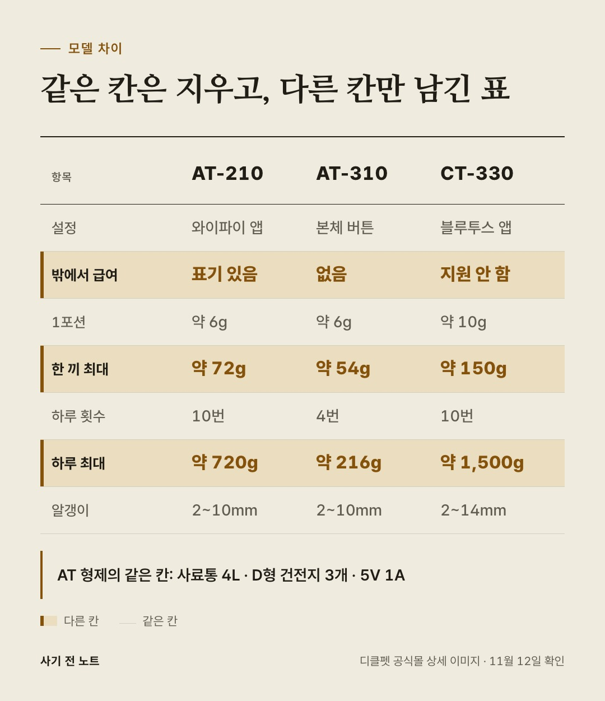

이 게시물은 쿠팡 파트너스 활동의 일환으로, 이에 따른 일정액의 수수료를 제공받습니다.
디클펫 AT-210 AT-310 차이, 밖에서 앱으로 줄지와 한 끼 양 두 가지로 갈려요
디클펫 AT-210과 AT-310은 생김새가 똑같고, 다른 건 두 가지예요. AT-210은 와이파이 앱으로 집 밖에서 밥을 줄 수 있고 한 끼 최대 약 72g, AT-310은 본체 버튼으로만 설정하고 한 끼 최대 약 54g입니다. 11월 12일 쿠팡 가격 차이는 4,000원(49,700원 대 45,700원). 우리 아이 한 끼 양과 외출 중 앱이 필요한지만 정하면 4,000원을 더 낼지 바로 결정돼요.

두 모델, 숫자로 놓고 보면
디클펫 공식몰 상세 표기예요.
| 모델 | 1포션 | 한 끼 최대 | 하루 횟수 | 하루 최대 | 설정 |
|---|---|---|---|---|---|
| AT-210 | 약 6g | 약 72g | 10회 | 약 720g | 와이파이 앱 |
| AT-310 | 약 6g | 약 54g | 4회 | 약 216g | 본체 버튼 |
| CT-330 | 약 10g | 약 150g | 10회 | 약 1,500g | 블루투스 앱 |
사료통 4L(약 2kg)와 정전 대비 D형 건전지 3개는 AT 두 모델이 같아요.
우리 아이 양이면 어느 모델?
한 끼 양으로 먼저 거르고, 그다음 횟수를 봅니다.
- 하루 120g을 세 끼(한 끼 40g)로 → 한 끼 54g 안, 하루 4끼 안이라 AT-310으로 충분해요.
- 하루 180g을 세 끼(한 끼 60g)로 → 한 끼가 54g을 넘으니 AT-310은 안 되고 AT-210.
- 하루 180g을 두 끼(한 끼 90g)로 → 72g도 넘어 AT 두 모델 모두 안 되고 CT-330.
- 하루 다섯 끼 이상 나눠 주는 집 → AT-310은 하루 4회가 끝이라 AT-210.
여기 숫자는 급식기가 '이만큼까지 나온다'는 상한이에요. 우리 아이에게 맞는 양은 사료 포장 표기나 수의사 안내가 기준입니다. 알갱이마다 무게가 달라서, 제조사도 처음엔 사료를 몇 번 배출해 평균 무게를 잰 뒤 설정하라고 적었어요(AT-210은 2~3회).
밖에서 앱으로 밥을 줘야 하는 집, 디클펫 AT-210 — 가격·구매처 보기

와이파이 앱, 연결은 어렵지 않나요?
AT-210은 처음 한 번 비밀번호가 걸린 2.4GHz 와이파이에 붙여야 하고, 그 뒤엔 LTE·5G 어디서든 앱을 쓸 수 있다고 적혀 있어요. 10월 19일에 모은 쿠팡 상품평을 보면 별점 1~3점 20개 중 4개가 연결이 어렵거나 앱이 끊긴다는 내용이었고, 최근 상품평 40개에서는 그런 말이 0개였어요. 반대로 AT-310 최근 상품평 40개 중 14개는 앱 없이 설정이 간단하다는 이야기였습니다.
앱 없이 버튼으로 하루 네 끼, 디클펫 AT-310 — 가격·구매처 보기
한 끼가 72g을 넘거나 알갱이가 크면 CT-330
CT-330은 한 끼 최대 약 150g, 사료통 5L이고 알갱이도 2~14mm까지 받아요(AT 두 모델은 2~10mm). 10mm보다 큰 사료를 쓰는 집에도 맞습니다. 11월 12일 쿠팡 가격은 39,700원으로 셋 중 가장 낮았어요.
대신 앱이 블루투스 전용이라 약 10m 안에서만 붙고, 밖에서 원격 급식은 안 된다고 제조사가 적었어요. 1포션이 10g이라 조절 단위가 굵다는 점도 한 끼를 조금씩 맞춰야 하는 작은 아이에겐 불편할 수 있어요.
한 끼가 72g을 넘는 집, 디클펫 CT-330 — 가격·구매처 보기

정전 때는?
AT-210은 건전지 교체 주기가 3~7일로 짧아 정전 대비로만 쓰라는 안내예요. CT-330도 AA 건전지 4개를 정전 대비 보조 전원으로 권장해요. 습식 사료는 세 모델 모두 피하세요. AT 두 모델은 내부 장애가 생길 수 있다고, CT-330은 권장하지 않는다고 적었어요.
확인하지 못한 것: AT-310 건전지 지속 기간은 자료마다 3~6개월과 30~90일로 달라요. 세 대 모두 직접 써 본 글은 아니고, 숫자는 디클펫 공식몰 상세 이미지(11월 12일 확인), 가격은 11월 12일 쿠팡 기준이에요.
출처
- 디클펫 AT-210 공식몰 상세: https://diclepetree.co.kr/product/detail.html?product_no=1015
- 디클펫 AT-310 공식몰 상세: https://diclepetree.co.kr/product/detail.html?product_no=1133
- 디클펫 AT-330(CT-330) 공식몰 상세: https://diclepetree.co.kr/product/detail.html?product_no=1437